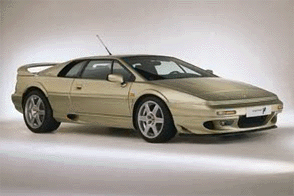
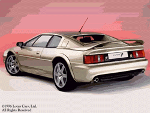

Lotus Espirit

Specs(Espirit V-8 Turbo)
Price |
$82,625 |
Top Speed |
172mph(claimed) |
Acceleration |
|
Engine |
|
0-30mph |
N/A |
Type |
Twin Turbo V8, 32valve Quad cam |
0-60mph |
4.4sec |
Displacement |
3.5L(3506cc) |
0-100 |
N/A |
Power |
349hp@6500rpm |
1/4 mile |
12.8/111.8mph |
Torque |
295 lbs-ft@4250rpm |
Weight |
2,968 lbs |
Handling |
|
Gas mileage |
|
Skidpad |
.98g |
City |
15mpg |
600ft slalom |
70.0mph |
Highway |
23mpg |
Powertrain |
Mid-engined, rear wheel drive, 5 speed manual |
(? = incomplete data or unverified info, N/A = info Not Available)
Beyond the specs:
Ferrari F355 beating performance at a $50,000 savings, is that a good deal or what. This Lotus has excellent handling with a its near flawless power assisted steering which gives you great road feel. The Espirit design may be a little dated, but it is still a looker and its performance is excellent. Still it has a few other faults, like the driving position and the turbo lag, but it still beats the Ferrari F355 to 60mph by .6 seconds. This Lotus like all other Lotuses is a lightweight and it is an improvement over the previous Espirits, which had 4 cylinder engines that were not enough. Fortunately, this Lotus has a twin turbo V8 to compliment its excellent kevlar reinforced chassis and refined steering system. Still this Lotus needs to be modernized to keep up with the F355, which is being replaced with the even better F360 Modena. This is the car for those who like to precision driving, enjoy good handling, and can handle its amazing acceleration, which almost matches the somewhat less refined, less luxurious Dodge Viper.
~Oracle